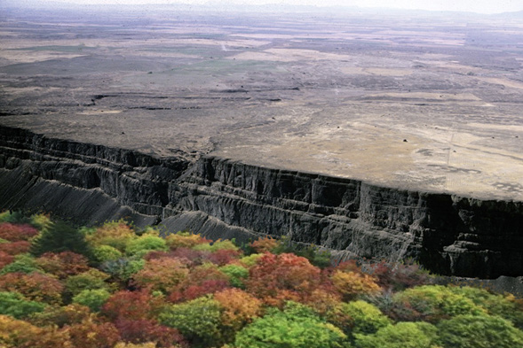

The importance of valleys
Valleys are important because they collect water from elevated areas. Thus, valleys are an important source of water. Areas with valleys that contain lakes and rivers are habitats for aquatic organisms such as fish. Therefore, fishing is undertaken in these areas. Some valleys have fertile soil; therefore, they are suitable for irrigation farming. Additionally, the rivers in valleys can be dammed to generate hydro-electric power. Lakes and some rivers are useful for transporting people and goods using vessels such as ships and boats.
Plateaus
A plateau is a large area of flat elevated land that is relatively raised sharply above the surrounding land. Figure 7 shows the view of a plateau.

GEOGRAPHY STD 3, FINAL DAMI (11-12-2023).indd 23
12/09/2025 13:24